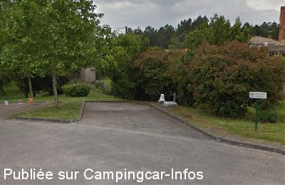
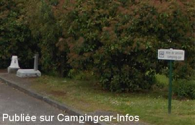

ASN = Aire de services avec stationnement nuit possible de :
FOURQUES SUR GARONNE
(N° 647)
Accès/adresse :
Pont des Sables, D933
A la halte Nautique du Canal
47200 FOURQUES SUR GARONNE
A la halte Nautique du Canal
47200 FOURQUES SUR GARONNE
Latitude : (Nord) 44.46066° Décimaux ou 44° 27′ 38′′
Longitude : (Est) 0.13891° Décimaux ou 0° 8′ 20′′
Tarif : Gratuit
Type de borne : Artisanale
Services :


Restauration
Commerces à proximité.
Autres informations :
Ouvert de mars à octobre
4 emplacements en pente
Tél : +33(0)553 892 559
Tél Maison du Tourisme : +33 (0)553 892 559
Tél Halte Nautique : +33 (0)553 207 919
A proximité de la Voie Verte.

Le 24/07/2015 par lelito

Le 24/07/2015 par lelito
de
Paul Guntz
le 28/03/2016 :
De passage le 26.03.16 – tout le parking, très pentu, est pris par les voitures. Aire de service gratuite, l'eau est distribuée avec un bouton poussoir.
De passage le 26.03.16 – tout le parking, très pentu, est pris par les voitures. Aire de service gratuite, l'eau est distribuée avec un bouton poussoir.
de
ManuReva
le 14/07/2012 :
De passage le 30. Juin 2012 nous etions tres surpris de la place. Il faut trouver le bon sence pour ce stationer mais par contre nous avons manger une de meilleur pizza de notre vis " SUR PLACE ".( Pizzeria du Canal chez Papou ) Ce Monsieur vient toutes les jours et ca vaut le prix !!
De passage le 30. Juin 2012 nous etions tres surpris de la place. Il faut trouver le bon sence pour ce stationer mais par contre nous avons manger une de meilleur pizza de notre vis " SUR PLACE ".( Pizzeria du Canal chez Papou ) Ce Monsieur vient toutes les jours et ca vaut le prix !!
de
Maryvonne AUGAIS
le 18/08/2011 :
le 31 Juillet, aucune possibilité de stationner, toutes les places étaient prises par des voitures. L'aire de service était très difficilement accessible pour la même raison
le 31 Juillet, aucune possibilité de stationner, toutes les places étaient prises par des voitures. L'aire de service était très difficilement accessible pour la même raison
de
louloutte
le 11/05/2011 :
cette aire est facilement trouvable, il est vrai que nous avons rentré les aires sur le gps DONC FACILE, mais un conseil, si vous y allé, prévoyez plusieurs jeux de calles
DOMMAGE
cette aire est facilement trouvable, il est vrai que nous avons rentré les aires sur le gps DONC FACILE, mais un conseil, si vous y allé, prévoyez plusieurs jeux de calles
DOMMAGE
de
le 22/04/2008 :
l'aire ce trouve a coté du port fluvial et du pont de la grande route.D'ailleurs cela cause pas mal de bruit car axe bergerac mont de marsan et surtout sert de bretelle a l'a62 pour les marmandais preferer l'aire de villeton a 15 km ou de casteljaloux(15 km)
l'aire ce trouve a coté du port fluvial et du pont de la grande route.D'ailleurs cela cause pas mal de bruit car axe bergerac mont de marsan et surtout sert de bretelle a l'a62 pour les marmandais preferer l'aire de villeton a 15 km ou de casteljaloux(15 km)
de
Guy et Joëlle
le 14/04/2008 :
Nous n'avaons pas réussi à la trouver et sommes allés à Casteljaloux
Nous n'avaons pas réussi à la trouver et sommes allés à Casteljaloux
de
Jan Dennett
le 30/01/2008 :
We also had difficulty finding this aire as we wrongly followed the signs to the village of Fourques-sur-Garonne. We eventually found it back on the main road D933 just before the bridge over the canal. The parking area for camping cars is next to the road and very noisy. Also the water is turned off in the winter. We went a few miles to Caumont, a much nicer aire.
We also had difficulty finding this aire as we wrongly followed the signs to the village of Fourques-sur-Garonne. We eventually found it back on the main road D933 just before the bridge over the canal. The parking area for camping cars is next to the road and very noisy. Also the water is turned off in the winter. We went a few miles to Caumont, a much nicer aire.
de
Thierry Pauquet
le 28/10/2005 :
pour info la localisation est des plus simple elle est juste avant le pont du canal a droite a coté de la maison du tourisme en direction de marmande
pour info la localisation est des plus simple elle est juste avant le pont du canal a droite a coté de la maison du tourisme en direction de marmande